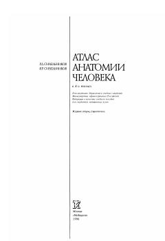

САInson anatomiyasi bo'yicha to'rtinchi jild nerv tizimi va sezgi organlariga bag'ishlangan.
Mazkur to'rtinchi jildda markaziy, periferik va vegetativ nerv tizimi hamda sezgi organlarining tuzilishi, topografiyasi va funksiyalari batafsil yoritilgan. Kitob asl rasmlar, rentgenogrammalar va preparat suratlari bilan boyitilgan bo'lib, tibbiyot oliy o'quv yurtlari talabalari uchun mo'ljallangan.